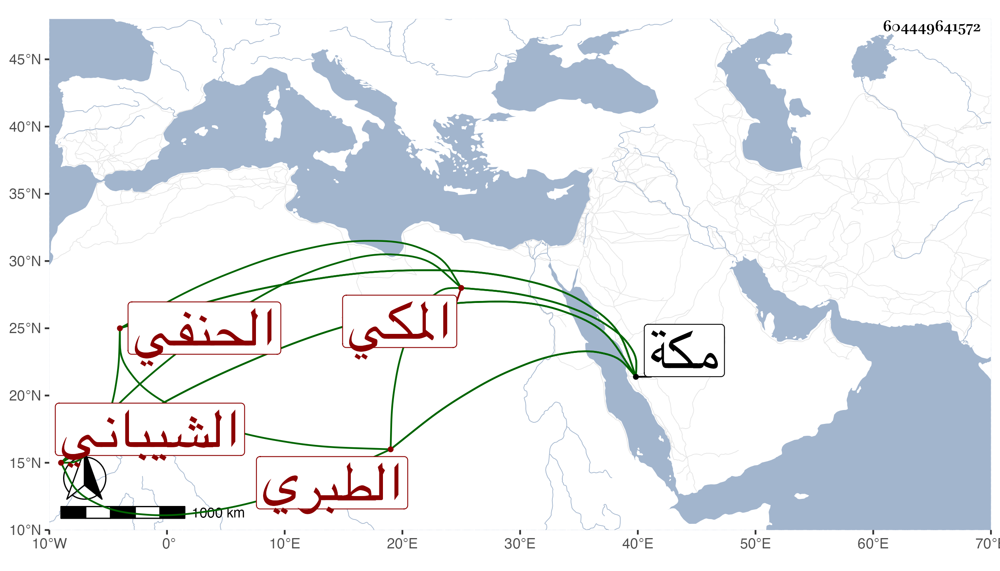

0902Sakhawi.DawLamic.ITO20230111-ara1.EIS1600.604449641572
Biography ID: 604449641572
1
آسية ابنة جار الله بن صالح بن أبي المنصور أحمد بن عبد الكريم بن أبي المعالي يحيى بن عبد الرحمن بن علي بن الحسين بن علي أم عبد الله وام محمد ابنة المسند الجلال الشيباني الطبري الأصل المكي الحنفي والدها الماضي . ولدت في رجب سنة ست وتسعين وسبعمائة بمكة وأجاز لها في التي تليها فما بعدها خلق منهم محمد بن محمد بن محمد السخاوي وسعد بن يوسف النووي ومحمد بن أبي بكر ابن سليمان البكري وعائشة ابنة ابن عبد الهادي وابن صديق والعراقي والهيثمي بل سمعت على أبي الحسن بن سلامة ، وتزوجها أبو البقاء بن الضيا فأولدها عدة منهم أبو النجا محمد ومات عنها فتأيمت بعده ، أجازت لنا وماتت في جمادى الأولى سنة ثلاث وسبعين بمكة .
